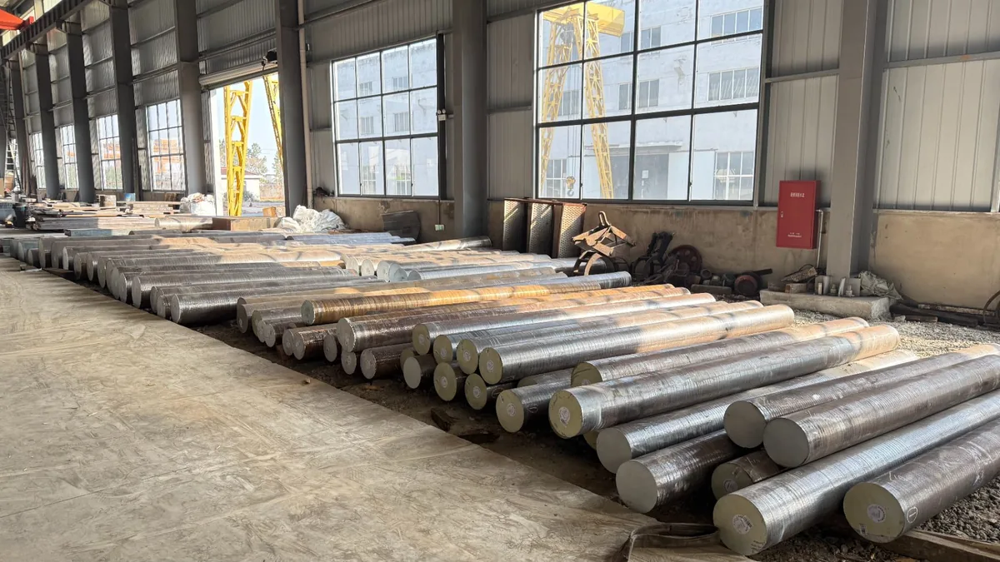
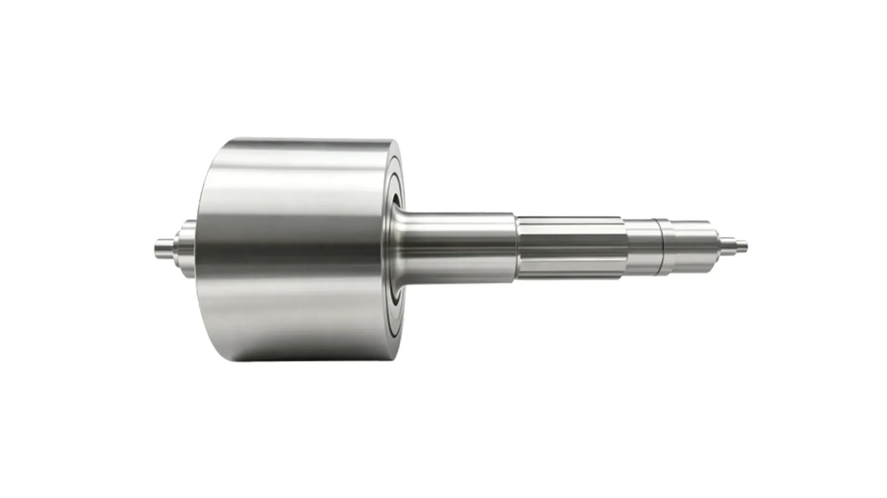
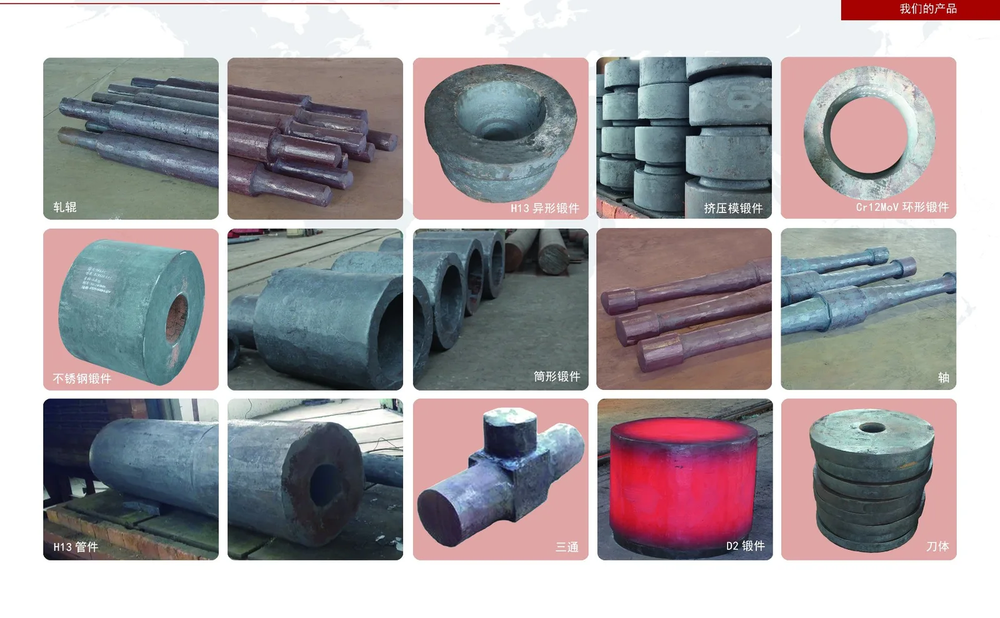

H13 Die Steel · Hot-Work Die Forgings · Various Forgings · Flywheel Rotor Forgings · Hydraulic Cylinder Barrels · Oil & Gas Forgings · Integrated Precision Machining


Baosteel H13 die steel supply and heat treatment, with metallographic inspection and mechanical testing, for die-casting dies, hot forging dies and precision mould manufacturing.
| Inspection Standard | NADCA #207 / SEP 1614 / VDG ASA |
|---|---|
| Metallography | Non-metallic Inclusions · Grain Size · Annealed Structure |
| Mechanical Properties | GB/T 228.1-2021 Tensile Test |
| Supply Form | Annealed Round Bar / Forgings / Heat-Treated |
| Supporting Services | UT Inspection · Reports Included |
High-strength forgings for power equipment, mechanical transmission, dies and heavy machinery, custom-forged, heat-treated and precision-machined to customer drawings, covering alloy steel, stainless steel and more.
| Product Range | Shaft Forgings · Ring Forgings · Disc Forgings · Block Forgings · Stainless Steel Forgings |
|---|---|
| Supply Form | Blanks / Rough-Machined / Heat-Treated / Finished |
| Quality Control | Chemical Composition · Mechanical Properties · UT Inspection |
| Standards | GB/T 228.1 Mechanical (ISO 6892-1 · ASTM E8/E8M)· GB/T 6402 UT (ASTM A388/A388M · EN 10228-3 · JIS G 0587), etc. |


High-strength, high-purity large-scale steel flywheel rotors, designed for flywheel energy storage systems, with 10-million-cycle high-cycle fatigue testing passed and volume delivery to leading manufacturers.
| Application | Flywheel Energy Storage Systems |
|---|---|
| Fatigue Performance | Passed 10 million high-cycle fatigue cycles |

Large-bore hydraulic cylinder barrel forgings: forged and quench-and-tempered, with dense structure and uniform wall thickness, plus UT and mechanical inspection reports included.
| Common Materials | 27SiMn / 35CrMo (DIN 1.7220 · JIS SCM435) / 42CrMo (DIN 1.7225 · JIS SCM440 · AISI 4140) / 45# (DIN C45 · JIS S45C · AISI 1045) / 35Mn / E355 |
|---|---|
| Supply Form | Forged Blanks / Rough-Machined / Q&T |
| Quality Control | Chemical · Mechanical · UT · Hardness |
| Applications | Construction Machinery · Mining Supports · Plastics Machines · Marine & Port |


Pressure-bearing forgings for oil & gas manifolds: adapters, square tees and crosses in 4130 (30CrMo) alloy steel, integrally forged and quench-and-tempered, with UT and mechanical inspection reports included.
| Main Products | Adapters · Square Tees · Square Crosses |
|---|---|
| Common Materials | Primarily 4130 / 30CrMo (DIN 1.7218 · JIS SCM430); also 4140 / 42CrMo (DIN 1.7225 · JIS SCM440) / 35CrMo (DIN 1.7220 · JIS SCM435) / 20CrMo |
| Supply Form | Forged Blanks / Rough-Machined / Q&T |
| Quality Control | Chemical · Mechanical · UT · Hardness |
| Applications | Fracturing Manifolds · Cementing Equipment · Wellhead Equipment · Drilling Machinery |


Hot-work die steel forgings: hot forging dies, extrusion die blocks, container liners, profile dies and stems in H13 / 5CrNiMo / 5CrNi2MoV / H18 / S320 — forged and spheroidizing-annealed, with metallography and mechanical inspection; supplied as forged blanks or bright rough-turned stock, reports included.
| Main Products | Hot Forging Dies · Die Blocks · Container Liners · Profile Dies · Stems |
|---|---|
| Common Materials | H13 (GB 4Cr5MoSiV1 · DIN 1.2344 · JIS SKD61) · 5CrNiMo (DIN 1.2713 · JIS SKT4 · AISI L6) · 5CrNi2MoV (≈DIN 1.2714) · H18 · S320 |
| Supply Form | Forged Blanks / Bright (Rough-Turned) Delivery |
| Quality Control | Chemical · Mechanical · UT · Metallography (incl. Spheroidized Structure) · Hardness |
| Applications | Forging Dies · Aluminum Extrusion · Hot Extrusion Tooling |
Chinese GB grades with their European (DIN/EN), Japanese (JIS) and American (AISI/ASTM) equivalents, so you can match our materials to your own drawings and specifications.
| China (GB) | Europe (DIN / EN) | Japan (JIS) | USA (AISI / ASTM) | Typical Application |
|---|---|---|---|---|
| 4Cr5MoSiV1（H13） | 1.2344 · X40CrMoV5-1 | SKD61 | H13 | Hot forging dies · Extrusion dies · Die casting dies |
| 5CrNiMo | 1.2713 · 55NiCrMoV6 | SKT4 | L6 | Hammer dies · Large hot forging dies |
| 5CrNi2MoV | ≈1.2714 · 55NiCrMoV7 | — | — | Large die blocks · Hammer dies |
| 42CrMo | 1.7225 · 42CrMo4 | SCM440 | 4140 | Shafts · Pressure parts · Gears |
| 35CrMo | 1.7220 · 34CrMo4 | SCM435 | 4135 | Shafts · Connecting rods · Fasteners |
| 30CrMo（4130） | 1.7218 · 25CrMo4 | SCM430 | 4130 | Oil & gas manifolds · Pressure forgings |
| 20CrMo | ≈1.7321 · 20CrMo4 | SCM420 | 4118 | Carburized parts · Couplings |
| 45# | 1.0503 · C45 | S45C | 1045 | General shafts · Flanges |
| 40Cr | 1.7035 · 41Cr4 | SCr440 | 5140 | Quenched & tempered shafts · Connecting rods |
| 2Cr13 | 1.4021 · X20Cr13 | SUS420J1 | 420 | Corrosion-resistant stainless forgings · Valve bodies |
| Cr12MoV | 1.2379 · X153CrMoV12 | SKD11 | D2 | Cold work dies · Shear blades |
| 718 | 1.2738 · 40CrMnNiMo8-6-4 | — | P20+Ni | Plastic mould blocks |
| 27SiMn | — | — | — | Hydraulic cylinder barrels (GB-specific grade) |
| E355 | EN E355 · 1.0580 | — | — | Hydraulic cylinder barrels · Precision tube blanks |
※ Cross references are approximate and for grade selection only. Final acceptance is per the standard and chemical composition agreed in the contract and stated on the mill certificate. Grades H18 and S320 are supplied to customer specification — please advise the required equivalent.
| Item | China (GB) | USA (ASTM) | Europe (EN / ISO) | Japan (JIS) | Notes |
|---|---|---|---|---|---|
| Ultrasonic Testing (UT) of Forgings | GB/T 6402 | ASTM A388 / A388M | EN 10228-3 | JIS G 0587 | Internal defect detection — performed piece by piece |
| Room-Temperature Tensile Test | GB/T 228.1 | ASTM E8 / E8M | ISO 6892-1 | JIS Z 2241 | Rm · Rp0.2 · A · Z |
| Charpy V-Notch Impact Test | GB/T 229 | ASTM E23 | ISO 148-1 | JIS Z 2242 | Charpy V-notch impact energy (AKV) |
| Axial Fatigue Test | GB/T 3075 | ASTM E466 | ISO 1099 | — | High-cycle fatigue verification (rotor parts) |
| Tool & Die Steel Grade Standard | GB/T 1299 | — | ISO 4957 | JIS G 4404 | Grade basis for H13 and other tool steels |
| Alloy Structural Steel Grade Standard | GB/T 3077 | — | EN 10083-1 | JIS G 4053 | Grade basis for 42CrMo and other structural steels |
| Tool Steel Metallographic Rating | — | NADCA #207 | SEP 1614 / VDG ASA | — | Inclusions · grain size · annealed microstructure |
※ Testing can also be performed to ASTM / EN / JIS standards on request — please specify the standard and acceptance level in the purchase order. UT of forgings follows GB/T 6402 by default; ASTM A388/A388M, EN 10228-3 or JIS G 0587 are available on request.
Covering die steel, stainless steel, alloy steel, special steel and more, supporting non-standard customization and build-to-print.
